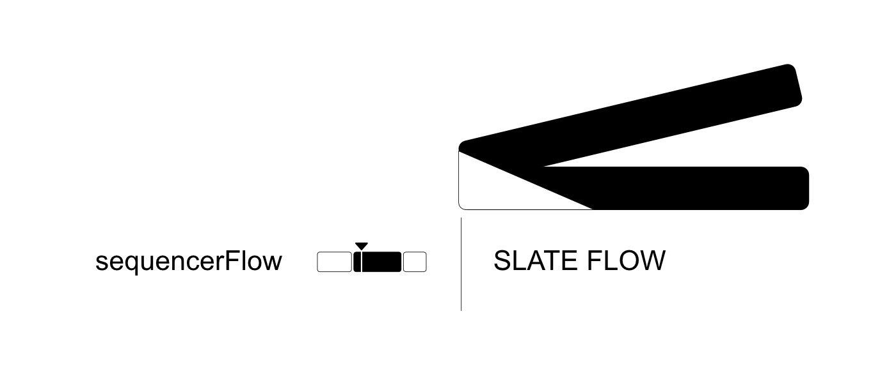
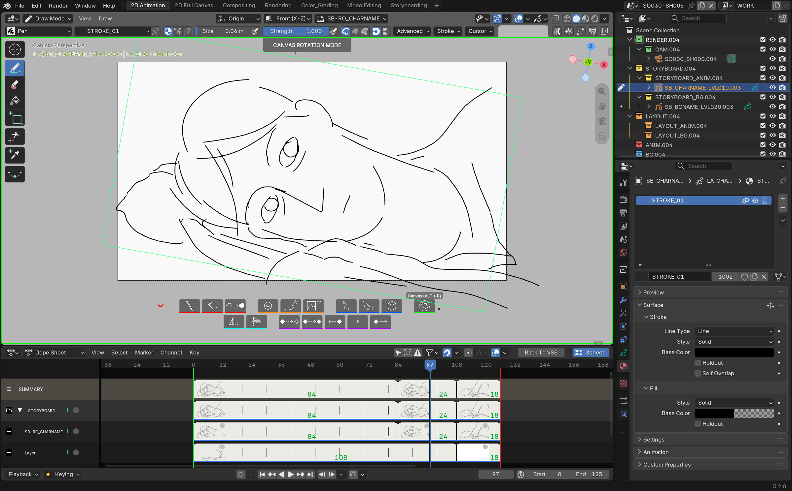

MontageEditing

sequencerFlow
Montage vidéo plus professionnel, plus fluide aussi, directement dans le VSE de Blender.
More professional, smoother video editing, right inside Blender's VSE.
LITE gratuitLITE free
PRO · 39 €
Blender 5.2 LTS+ · GP v3

- Barre d'outils contextuelle, montage 3 points (in/out, insert), guides de rangement et minimap : monter avec logique.
- Courbes d'opacité et de volume, VU-mètre et retiming directement sur les strips.
- Export et renommage par lot ou au plan.
- Connexions entre strips inscrites dans les métadatas — la base d'un export 100% fonctionnel vers Resolve via sequencerOTIO.
- Contextual toolbar, 3-point editing (in/out, insert), tidy guides and a timeline minimap: edit with logic.
- Opacity and volume curves, VU meter and retiming, right on the strips.
- Batch or per-shot export and renaming.
- Strip connections written into the metadata — the foundation of a 100% functional export to Resolve via sequencerOTIO.